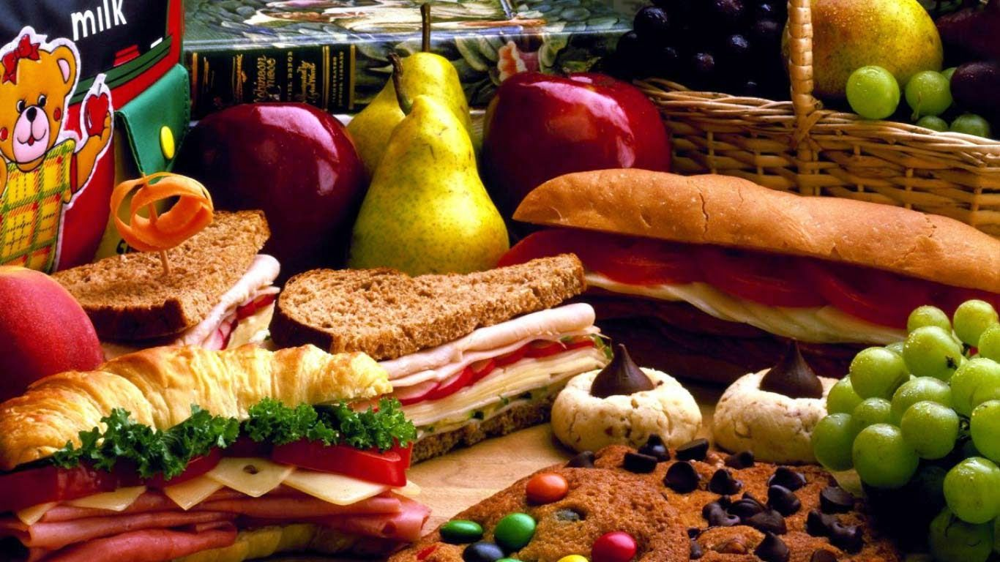

Water, electricity, public transport and healthcare are some of the basic things that we all need in our day to day lives. The Constitution recognizes
the right to water as a part of our fundamental right to life. To prevent the water-borne diseases like cholera and dysentery, proper sanitation and
safe drinking water is a must. The right to safe drinking water has been considered a fundamental right in recent court cases.The presence of proper
public facilities like electricity and public transport would benefit many people in more ways than one. The presence of public facilities is essential
and the responsibility of ensuring their availability lies with the government.The government is funded by the revenue generated from taxes taken from
people. The details of the income and expenditure are presented to the Parliament during the annual budget session. Private companies contribute more in
the areas of health care and education where there is more scope for profit. The government sub-contracts the work to private companies, but at the same
time, ensure that the work is overseen by the government.

World Class library
A library is a place where books and sources of information are stored. They make it easier for people to get access to them for various
purposes.Libraries are very helpful and economical too. They include books, magazines, newspapers, DVDs, manuscripts and more.

Largest Play Groung
A game is a structured form of play, usually undertaken for entertainment or fun, and sometimes used as an educational tool.[1]Games are
distinct from work, which is usually carried out for remuneration, and from art, which is more often an expression of aesthetic or ideological
elements. However, the distinction is not clear-cut, and many games are also considered to be work (such as professional players of spectator
sports or games) or art (such as jigsaw puzzles or games involving an artistic layout such as Mahjong, solitaire, or some video games).

Tasty and healthy Food
Food is the basic human need to stay alive. Moreover, it is the need of every living organism. Therefore it is important that we should not
waste food. Our world consists of different types of cultures. These cultures have varieties of dishes of food in them. Thus, all the dishes
have different taste. Furthermore, our nature provides us a variety of food. From fruits to vegetables, from Dairy food to seafood everything
is available. Different countries have their own specialty of dishes.